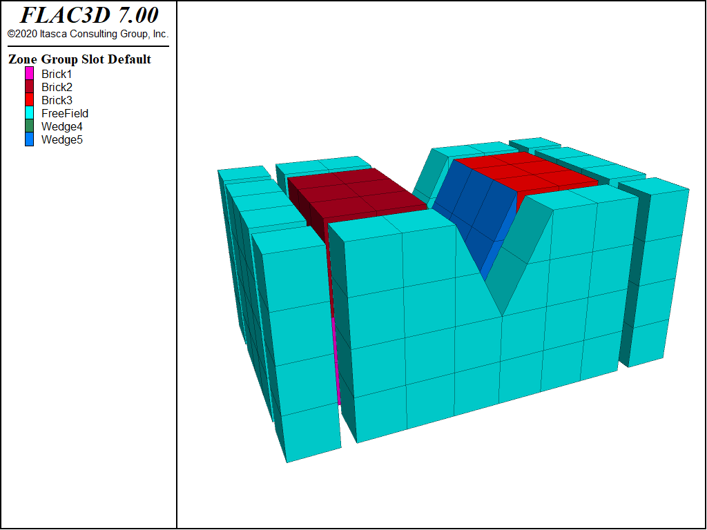
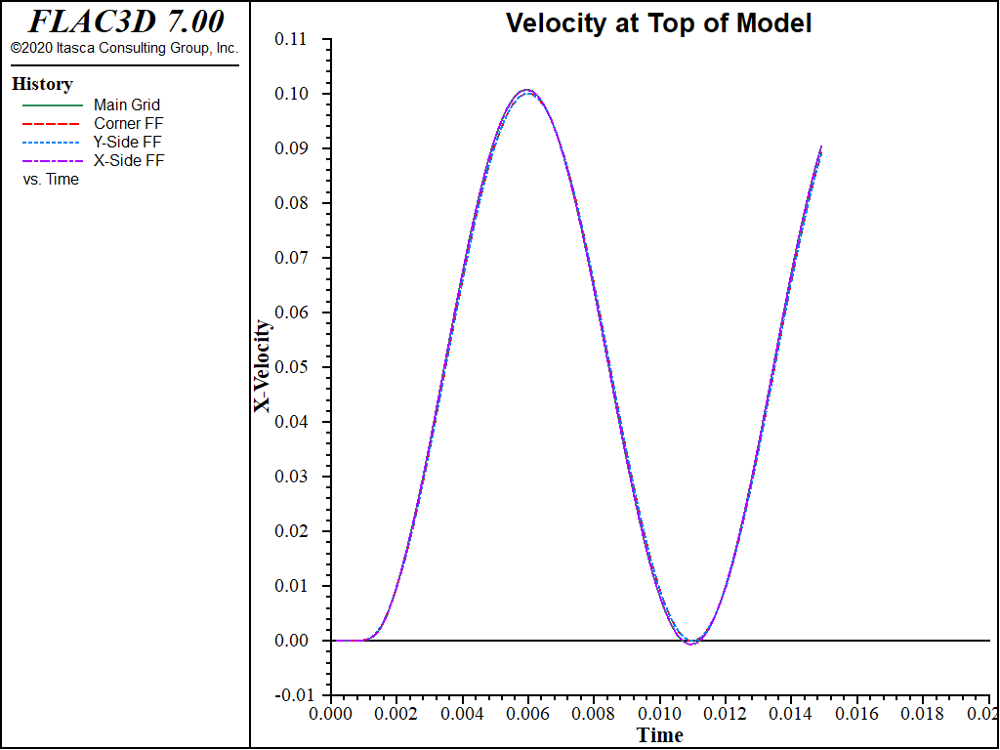

含自由场边界的模型的剪切波加载
注意
要在 FLAC3D 中查看此项目，请使用菜单命令 。选择“Dynamic/ ShearWaveFreeFieldBoundModel”并选择“ShearWaveFreeFieldBoundModel.f3prj”以加载。 所用主数据文件见本示例末尾（main data files）。其余数据文件可在项目中找到。
给出了使用自由场边界条件的一个简单示例。图 1（Figure 1） 显示了最终模型几何。


图 1：FLAC3D 模型中的侧面和角部自由场边界。
在模型底部施加剪切应力波。图 2（Figure 2） 显示了自由场和主网格中不同点处模型顶部的 \(x\) 方向速度。


图 2：含自由场边界时模型顶部的 x 方向速度时程，取自四个不同位置（主网格和自由场网格单元中）。
数据文件
ShearWaveFreeFieldBoundModel.dat
;---------------------------------------------------------------------
; 动力问题所用脚本文件
; 具有自由场边界的模型的剪切波加载
;---------------------------------------------------------------------
model new
model large-strain off
fish automatic-create off
model title "Shear wave loading of a model mech with free-field boundaries"
model config dynamic
;
; 创建网格单元
zone create brick size 6 3 2
zone create brick size 2 3 2 point 0 (0,0,2)
zone create brick size 2 3 2 point 0 (4,0,2)
zone create wedge size 1 3 2 point 0 (2,0,2)
zone create wedge size 1 3 2 point 0 (4,3,2) point 1 (3,3,2) ...
point 2 (4,0,2) point 3 (4,3,4) ...
point 4 (3,0,2) point 5 (4,0,4)
;
; 命名模型边界
zone face skin
;
; 分配模型和属性
zone cmodel assign elastic
zone property bulk 66667 shear 40000 density 0.0025
;
; 设置初始条件
model gravity 10
zone initialize-stresses ratio 0.25
;
; 设置边界条件——滚动边界
zone face apply velocity-normal 0 range group 'West2' or 'East2'
zone face apply velocity-normal 0 range group 'North' or 'South'
zone face apply velocity-normal 0 range group 'Bottom'
;
; 静力平衡
model dynamic active off
model solve convergence 1
model save 'FreeFieldInit'
;
; --- 动力计算 A：向底部施加速度 ---
zone face apply-remove range group 'Bottom' ; 移除速度边界
zone face apply quiet range group 'Bottom' ; 添加静边界
fish define wave
wave = 0.5 * (1.0 - math.cos(math.pi*zone.dynamic.time.total*200.0))
end
zone face apply stress-dip 1.0 fish wave ...
range group 'Bottom' ; 随时间变化的应力边界
zone dynamic free-field on ; 自由场边界
;
; 历史
model history name='time' dynamic time-total
zone history name='grid' velocity-x position (2,1,4.0)
zone history name='corner' velocity-x position (-1.3,-1.3,4.0)
zone history name='yside' velocity-x position (-1.3,0,4.0)
zone history name='xside' velocity-x position (2,-1.3,4.0)
;
; 求解至时间 0.015
model dynamic active on
model solve time-total 0.015
model save 'FreeField'
| 这些内容对您有帮助吗？… 版权与免责声明 |
FLAC3D © 2019, Itasca | 原文更新于 2020 年 10 月 8 日 |